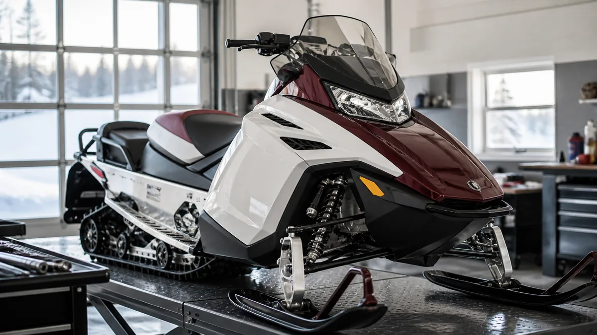

СНЕГОХОДЫ · 11
Подготовка снегохода к сезону
До устойчивого снега стоит проверить технику в спокойном режиме, чтобы сезон начался с поездки, а не с поиска причины неисправности.

Контроль перед запуском
- Проверьте аккумулятор, топливо, масло, тормозную жидкость и состояние шлангов.
- Осмотрите лыжи, направляющие, гусеницу и подвеску.
- Проверьте свет, подогревы, аварийный выключатель и тормоза.
Первый выезд
После прогрева прислушайтесь к трансмиссии и двигателю, следите за температурой. Первую поездку делайте без максимальной нагрузки.
Двигатель и ходовая
Перед сезоном осмотрите гусеницу, направляющие, лыжи и подвеску, затем проверьте свет, подогревы и аварийный выключатель. Первый запуск делайте в проветриваемом месте и без резких оборотов.
Первый выезд
- Едьте без максимальной нагрузки.
- Следите за температурой и звуком трансмиссии.
- После поездки проверьте натяжение гусеницы и крепёж.
Полезно после проверки
Подготовку лучше завершить до первого устойчивого снега: тогда есть время спокойно заказать расходники и устранить замечания, а не терять первые выходные сезона.